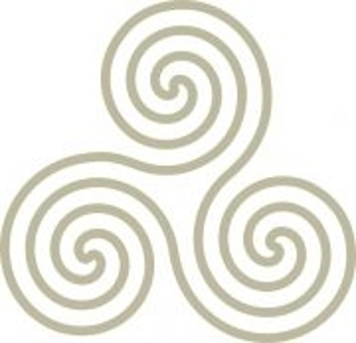
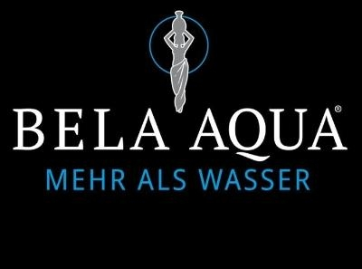
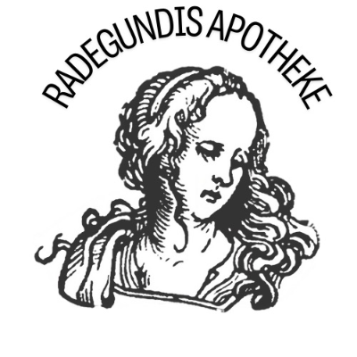
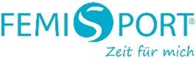
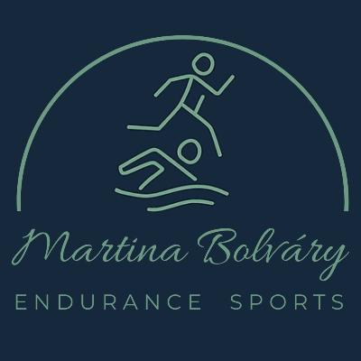
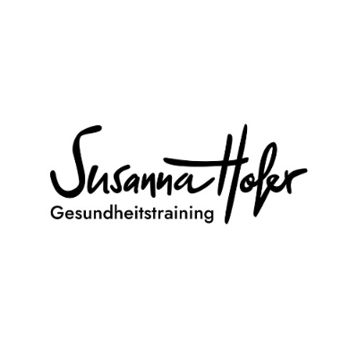

Diese HTML ist gemeinsame Uebersicht und Datensammlung: mit gleichrangigen Personenprofilen, Arbeitszugaengen, Multiplikatoren, Suchauftraegen, Kooperationen und Workshop-Ideen.
Neun klar getrennte Bereiche fuehren vom Gruppenueberblick ueber die Datensammlung bis zu Kooperation und Workshop.
Alle aktuell erfassten Personen gleichzeitig, gleichrangig und klar nach Arbeitsfeldern geordnet.

Peter Rauch
Wolfgang Spreng
Chong Liu
Werner Thron
Martina Bolváry
Susanna HoferAlle auf einer Folie: Fachliche Profile und organisatorische Rollen sind getrennt. Jede Person erscheint im Gruppenueberblick nur einmal; Mehrfachzugaenge werden spaeter in der Landkarte gezeigt.
Jedes Mitglied erhaelt dieselben Datenfelder, denselben Platz und dieselbe Moeglichkeit zur Korrektur.
Arbeitsfelder und Zugaenge zeigen Anknuepfungspunkte, keine Wertung, Exklusivitaet oder fachliche Rangordnung.
Unvollstaendige oder noch nicht bestaetigte Angaben bleiben sichtbar offen und werden nicht von anderen ergaenzt.
Gesundheitliche Leistungen stehen in den Kernprofilen. Organisation, Datenpflege und HTML sind eigene Projektrollen.
Freigabeprinzip: Jedes Mitglied prueft und bestaetigt das eigene Profil. Aenderungen an der Einordnung werden nachvollziehbar als gemeinsamer Arbeitsstand behandelt.
Name, BNI-Kategorie, Unternehmen, Website und Kontaktweg.
Wofuer stehe ich, welche Leistungen biete ich und wann soll man an mich denken?
Welche fachlichen oder alltagsnahen Zugaenge passen zu meinem Angebot? Mehrfachnennungen sind moeglich.
Drei bis fuenf selbst benannte Wunschbranchen, Kontakte oder Besucherprofile.
Moegliche Empfehlungslinien, Vortraege, Workshops und konkrete Beitraege fuer die Gruppe.
Quelle, letzte Aktualisierung, offene Angaben und persoenliche Freigabe.
Pflegeprozess: Susanna Hofer buendelt Rueckmeldungen, Peter Rauch pflegt die HTML technisch, und jedes Mitglied verantwortet die fachliche Richtigkeit des eigenen Profils. Digitale Werkzeuge unterstuetzen nur bei Struktur und Darstellung.
Im Meeting wurde die HTML als gemeinsame Uebersicht fuer die Gesundheitsgruppe vorgestellt. Jedes Mitglied kann dort nach demselben Schema mit Profil, Leistungen, Multiplikatoren, Zielgruppen und moeglichen Kooperationen erfasst werden.
Wichtig fuer den weiteren Ausbau: Die Plattform ist nicht nur Schaufenster, sondern zugleich Arbeitsgrundlage fuer Themen, Besucher, Kooperationen und gemeinsame Aussenwirkung.
Wer moechte, kann sich sehr gern an der HTML-Plattform beteiligen. Am einfachsten ist es, wenn Inhalte, Hinweise und Rueckmeldungen gebuendelt ueber Susanna Hofer zusammenlaufen.
In der ersten bereinigten Sammlung tauchten vor allem Friseure (7), Physiotherapeuten (5) und Aerzte (5) immer wieder auf. Danach folgen Heilpraktiker (4), Fitnessstudios (3) und Osteopathen (3).
Zweifach genannt wurden ausserdem Apotheken, Pflegedienste, Ernaehrungsmediziner, Coaches und Life Coaches. Offensichtliche Tippfehler wurden dabei mit zusammengefasst.
Besonders spannend: Friseure mit mehreren Filialen oder frisch gegruendete Salons sind nicht nur gute Multiplikatoren, sondern koennen auch als potenzielle neue Chapter-Mitglieder interessant sein.
Vielleicht kennt bereits jemand aus dem Chapter eine dieser Personen oder Einrichtungen und kann einen persoenlichen Kontakt herstellen.
Ort: Gersthofen
Besonders spannend, weil sie Friseur, Mode und ein Fruehstueckskonzept verbindet. Dadurch koennte sie fuer mehrere Branchen im Chapter interessant sein.
Ein erster Kontakt ueber WhatsApp wegen BNI bestand bereits vor laengerer Zeit. Damals fehlte ihr die Zeit; eine erneute, persoenliche Ansprache koennte sich lohnen.
Ort: Gersthofen
Gesucht wird ein vorhandener persoenlicher Kontakt oder eine gute Empfehlungslinie fuer eine direkte Ansprache.
Beide Einrichtungen passen zu den haeufig genannten Multiplikatoren der Gesundheitsrunde.
Region: Augsburg, inzwischen mit vier Filialen
Ein spannender Multiplikator mit mehreren Standorten und einem direkten Bezug zu Versorgung, Alltag und Gesundheit.
Aufgabe an die Runde: Wer kennt dort bereits jemanden, hat einen persoenlichen Kontakt oder kann eine passende Verbindung herstellen? Bestehende Beziehungen sollten vor einer kalten Ansprache zuerst genutzt werden.
Ergaenzende Kontakte fuer Naturhaar, nachhaltige Haarpflege und moegliche Empfehlungen im Stadtgebiet Augsburg.
Angebot: mobiler Naturfriseur in Augsburg
Adresse: Neudeker Str. 2, 86199 Augsburg
Telefon: 0821 993624
E-Mail: flitzoer@gmy.de
Relevanter Suchtreffer fuer einen klassischen Naturfriseur im Stadtgebiet Augsburg.
Konkrete Ansprechperson und Kontaktdaten vor der Ansprache noch bestaetigen.
Weiterer relevanter Suchtreffer fuer Naturhaar und nachhaltige Haarpflege in Augsburg.
Passenden persoenlichen Kontakt und Naturfriseur-Angebot vor der Ansprache bestaetigen.
Weitere moegliche Ansprechpartnerin fuer einen klassischen Naturfriseur im Stadtgebiet Augsburg.
Praxis- beziehungsweise Salonname und Kontaktdaten noch eindeutig zuordnen.
Naechster Schritt: Bestehende persoenliche Verbindungen im Chapter pruefen und die noch offenen Kontaktdaten vor einer Ansprache verifizieren.
Eindeutiger aktueller Treffer im Landkreis Augsburg, direkt noerdlich des Stadtgebiets.
Zahnarzt und Inhaber: Dr. med. dent. Johannes Neubert
Adresse: Schulstr. 23, 86462 Langweid am Lech
Website: dentalmedizin-langweid.de
Telefon: 08230 2859000
E-Mail: info@dentalmedizin-langweid.de
Ganzheitliche und biologische Zahnmedizin, Keramikimplantate, Umweltzahnmedizin, biologische Prophylaxe, metallfreie Versorgung und 3D-Diagnostik.
Die Praxis- und Kontaktdaten wurden ueber die aktuelle offizielle Praxiswebsite abgeglichen. Aeltere Verzeichniseintraege in Augsburg beziehen sich auf eine fruehere Taetigkeit.
Suchauftrag: Wer Dr. Johannes Neubert oder sein Praxisteam bereits kennt, meldet bitte den vorhandenen Kontakt fuer eine persoenliche Vorstellung.
Diese drei konkreten Suchauftraege wurden von Wolfgang Spreng, Dilek und Peter Rauch eingebracht. Gesucht werden bestehende Kontakte oder eine persoenliche Vorstellung.
Gesuchte Person: Frau Dr. Breitweg
Vermutete Region: Naehe Inning am Ammersee
Hinweis: Sie arbeitet mit Kindern.
Gesuchter Kontakt: Arthroklinik Pfersee, Dr. Ostenda
Gesucht wird eine bestehende Verbindung oder eine persoenliche Empfehlung fuer die Kontaktaufnahme.
Gesuchter Kontakt: Physio-Team Hochzoll
Hochzoller Str. 7a, Augsburg
Telefon: 0821 65635
Gesucht wird ein bestehender persoenlicher Kontakt oder eine Empfehlung fuer die Ansprache.
Rueckmeldung an die Runde: Wer eine der genannten Personen oder Einrichtungen kennt, meldet bitte den vorhandenen Kontakt, bevor eine neue direkte Ansprache erfolgt.
Zwei weitere moegliche Kontakte fuer die Gesundheitsrunde. Vor einer Ansprache werden bestehende Beziehungen und die fachliche Chapter-Passung geklaert.
Praxis: Physiotherapie & Atlasbehandlung in Augsburg-Hochzoll
Inhaberin: Melanie Müller
Website: physiotherapie-hochzoll.de
Telefon: 0821 66 17 41
E-Mail: info@physiotherapie-hochzoll.de
Offene Frage: In Teilbereichen koennte eine Ueberschneidung mit Michael Jaufmann bestehen. Fachliche Abgrenzung und Chapter-Passung deshalb vor einer Ansprache gemeinsam klaeren.
Praxis: Hebammenpraxis Hochzoll
Taetigkeitsgebiet: Augsburg, Friedberg, Mering und Hochzoll
Praxisraum: in den Raeumen der gynäkologischen Praxis Becker, Friedberger Str. 140, Augsburg-Hochzoll
Leistungen: Schwangerenvorsorge, Hilfe bei Schwangerschaftsbeschwerden, Behandlungen in der Praxis und weitere Kurse.
Rueckmeldung an die Runde: Wer Melanie Müller oder Tanja Holzmann bereits kennt, meldet bitte den vorhandenen Kontakt fuer eine persoenliche Vorstellung.
Fuer die feinere Einordnung ist eine Aufteilung in Arbeitsfelder klarer als ein grobes Kreismodell.
Tiefergehende therapeutische, psychotherapeutische und diagnostische Arbeit.
Alltagsnahe Versorgung, praktische Gesundheitsunterstuetzung und leicht verstaendliche Anknuepfungspunkte.
Arznei, Stoffwechsel, Beratung, TCM, Pflanzenheilkunde und lokale Gesundheitsdrehscheibe.
Bewegung, Routinen, Ausdauer, Rehasport, Leistungsfaehigkeit und Umsetzung im Alltag.
Biografie- und Krisenbegleitung, Team- und Elternberatung, Lifestyle, Neurotech, Community und emotionale Entlastung.
BNI-Struktur, Rueckmeldungen, Datensammlung, technische Pflege und gemeinsame Aussenwirkung.
Nutzen: Die Gruppe wird nicht nur als Liste von Berufen sichtbar, sondern als System mit klaren Feldern, Uebergaengen und Empfehlungswegen.
Diese Felder zeigen koerperliche, trainierende und alltagsnahe Zugaenge. Mehrfachzuordnungen sind gewollt und stellen keine Rangfolge dar.
Direktes manuelles Arbeiten an Faszien und Organen durch Michael. Biophysikalische Informationstherapie an Organen und Nerven durch Peter.
Wichtige Chapter-Abgrenzung: Michael ist fuer strukturelle Themen der vorrangige Ansprechpartner. Peter arbeitet in diesem Bereich ausschliesslich biophysikalisch und nicht manuell.
Funktionelles Arbeiten ueber Bewegung, Muskelaufbau, Praevention, Rehasport und Training.
Aufbau koerperlicher Leistungsfaehigkeit, Wiederaufbau nach Belastungen und begleitendes Training fuer eine sichere Rueckkehr in Bewegung und Alltag.
Andreas: Augenfunktion, Wahrnehmung und Sehen mit einem klar augenoptischen und alltagsnahen Zugang.
Heidi: Koerperwahrnehmung und nonverbale Kommunikation sowie kreativer Ausdruck durch kunsttherapeutische Prozesse.
Arbeit ueber Schwimmtraining, Ausdauer, Herz-Lunge-Kreislauf, Leistungsfaehigkeit und Routinen.
Alltagsnahe Versorgung, Wasser, Sehen, praktische Loesungen und leicht verstaendliche Gesundheitsansaetze.
Arznei, Mikronaehrstoffe, Stoffwechsel, TCM, Ernaehrung und koerpernahe Beratung.
Diese Felder ergaenzen die koerperliche Landkarte um psychische, pathophysiologische, regulatorische und energetische Sichtweisen.
Mentale Prozesse wie Erinnerung, Denkvorgaenge, emotionale Muster, innere Abspeicherungen und psychische Dynamiken.
Begleitung bei persoenlichen und beruflichen Veraenderungsprozessen, Neuorientierung, Team- und Karrierefragen sowie familiaeren Herausforderungen.
Arbeit mit inneren Bildern, tieferen Mustern, Trance, Suggestion und unbewussten Prozessen.
Beschwerdebilder und Ursachenebenen mit Blick auf konkrete Muster und Belastungsgruppen.
Steuerung, Anpassung, Erschoepfung, Schlaf, Leistungskurven und funktionelle Gesamtzusammenhaenge.
Energetische Einordnung ueber TCM, Meridianlogik und verwandte Leitbahnkonzepte.
Energetische Zugaenge, die ueber direkte Behandlung oder Impulsgebung mit den Haenden verstanden werden.
Nicht-invasive neuro-sensorische Reizsetzung fuer Balance, Fokus, Energie, Wohlbefinden und funktionelle Rueckmeldung.
Leseregel: Die Landkarte zeigt Beruehrungspunkte, keine Rangfolge. BNI-Struktur, Datenbuendelung und technische Pflege werden separat als Projektrollen dargestellt.
Die Zaehlung ist bereinigt, das heisst offensichtliche Schreibvarianten wie Fiseure/Friseure, Coachs/Coaches oder Life-Coaches/Life Coaches wurden zusammengefuehrt.
Je 2 Nennungen: Apotheken, Pflegedienste, Ernaehrungsmediziner, Coaches und Life Coaches.
Je 1 Nennung: Gesundheits- und Pflegeberufe, Modehaeuser, Sportfachhandel, Fahrradgeschaefte, TCM, Personalentscheider, Betriebsraete, Betriebsaerzte, Handwerker, Anlageberater, Therapeuten, Hebammen, Nachhilfelehrer, Businesscoachs, Gynaekologen, Urologen, Kinderaerzte, Nagelstudios, Fusspflege, Beauty, Sanitaetshaeuser, Gesundheitsberufe, Ernaehrungsberater, Pflegebereich, Psychotherapeuten, Orthopaeden, Kosmetiker, Personaltrainer und weitere Einzelbegriffe.
Zusaetzlich: Zweimal wurde auch der Sammelbegriff alle bisher genannten notiert.
Mit Susanna Hofer in der Datensammlung koennen diese Angaben spaeter sauber verdichtet und in Grafiken, Matrixen und BNI-Uebersichten ueberfuehrt werden.
Fairnessregel: Fehlende Angaben bleiben als offen sichtbar. Niemand wird wegen eines unvollstaendigen Profils kleiner dargestellt oder durch Vermutungen ergaenzt.
Die Kurzprofile geben zuerst Orientierung. Danach folgen ausfuehrliche Datenkarten mit Leistungen, Arbeitszugaengen, Multiplikatoren und sichtbar offenen Angaben.
Heilpraktik fuer Psychotherapie
Hypnose, psychotherapeutische Begleitung, Astropsychologie, systemische Beratung und Unternehmensbezug.
Heilpraktiker / Osteopathie
Bewegungsapparat, Osteopathie, Mobilitaet, Ruecken und Haltung sowie Infusionen, Schaedelakupunktur und Kinesiologie nach Klinghardt.
Heilpraktiker
Praevention und naturheilkundliche Einordnung bei chronischen und komplexen Themen mit Mikronaehrstoffen, biophysikalischer Informationstherapie, Pathophysiologie und Regulationsmedizin sowie mentalen und emotionalen Prozessen, Hypnose, TCM / Meridianen und Energetik.
Hinweis: Die Reihenfolge ist rein thematisch und nicht wertend. Alle Kernprofile werden gleichrangig dargestellt und mit neuen Rueckmeldungen weiter vervollstaendigt.
Augenoptik
Sehtests, Brillen, Kontaktlinsen und gesundheitsnahe Versorgung mit starkem Alltagsbezug.
Wasseraufbereitung
Trinkwasserqualitaet, Wassertests, Filter- und Osmoseloesungen fuer Haushalte, Praxen, Studios und Unternehmen.
Wichtig fuer die Gruppenlogik: Versorgung ist kein Heilberuf im engeren Sinn, aber ein sehr starker Anknuepfungspunkt fuer alltagsnahe Empfehlungen, Erstgespraeche und Weiterleitungen.
Apotheke
Versorgt Menschen im Alltag und bei akuten Bedarfen mit Arzneimitteln, Gesundheitsprodukten, schneller Verfuegbarkeit, E-Rezept, Lieferservice, TCM, Pflanzenheilkunde, Homoeopathie, Diabetes-Beratung und sichtbarem Notdienstbezug.
Ernaehrungs- und Gesundheitsberatung, Rueckenkurse, Personaltraining, BGF, Vortraege und alltagstaugliche Begleitung mit Blick auf Stress, Schlaf und Routinen.
Angebot ausschliesslich fuer Frauen.
Frauenfitness, med. Fitnesstraining, 30-Minuten-Zirkeltraining, Sporternaehrung, Koerperscanner, Beckenboden sowie Magnetstuhl-Anwendungen zur Unterstuetzung bei Beckenboden- und Blasenthemen.
Fitnessstudio mit gesundheitsorientiertem Muskeltraining, Rueckentraining, Rehasport, Abnehmen, Gruppenfitness und Praevention.
Endurance Sports mit Ausdaueraufbau, Trainingsplaenen, Gesundheitscoaching und alltagstauglichen Routinen rund um Bewegung und Leistungsfaehigkeit.
Mobiles Gesundheitstraining mit EMS sowie Anknuepfungspunkte zu Bewegung, Regulation, Entspannung und Gesundheitsalltag.
SuperPatch als nicht-invasiver, medikamenten- und chemiefreier Neurotech-Wearable-Ansatz mit Themen wie Schlaf, Stress, Fokus, Balance, Mobilitaet und Energie.
Gesundheit und Wellness Spezialist mit EQOLOGY, Omega-3-/Lifestyle-Kontext, Health Events und communitynahen Formaten.
Your Personal Life Coach
Biografie- und Krisenbegleitung, Kunsttherapie, TMS-Teamtraining, Karriere-, Staerken- und Arbeitsmotivation, Elternberatung sowie nonverbale Kommunikation. Slogan: Trust Your Power!
Alle Datenkarten sind ein Arbeitsstand und werden von den jeweiligen Mitgliedern geprueft und freigegeben.
Augenoptik und Optometrie mit Brillen, individuell angepassten Kontaktlinsen, Sehtests, Lupen, Passfotos sowie eigener Werkstatt fuer Anpassungen und Reparaturen.
Eigenstaendiger Zugang
Arbeitszugaenge und Anknuepfungspunkte
Aktuelle Multiplikatoren
Kontakt
Selbststaendiger Vertriebspartner der Bela Aqua GmbH. Das Bela-Aqua-Portfolio umfasst Beratung, Wassertests, Osmoseanlagen, Wasserspender und Service fuer Haushalte und Unternehmen; Wolfgangs genauer persoenlicher Leistungsumfang wird noch bestaetigt.
Arbeitszugaenge und Anknuepfungspunkte
Spannend fuer die Runde
Aktuelle Multiplikatoren
Kontakt
Versorgt Menschen im Alltag und bei akuten Bedarfen mit Arzneimitteln, Gesundheitsprodukten, schneller Verfuegbarkeit, E-Rezept, Lieferservice, TCM, Pflanzenheilkunde, Homoeopathie, Diabetes-Beratung und sichtbarem Notdienstbezug.
Arbeitszugaenge und Anknuepfungspunkte
Aktuelle Multiplikatoren
Kontakt
Der heilberufliche Kern mit tieferer therapeutischer, diagnostischer oder psychotherapeutischer Arbeit.
Heilpraktikerin fuer Psychotherapie mit Hypnose und psychotherapeutischer Begleitung fuer Einzelpersonen, Paare und Kinder sowie Astropsychologie, systemischer Beratung, Mentalcoaching im Profisport und Unternehmensangeboten.
Arbeitszugaenge und Anknuepfungspunkte
Aktueller Stand
Multiplikatoren wurden fuer Christina in der bisherigen Liste noch nicht konkret eingetragen.
Kontakt
Heilpraktiker und Osteopath mit Schwerpunkt auf Bewegungsapparat, Ruecken, Haltung und Mobilitaet. Die offizielle Webseite nennt ausserdem Dorn-Therapie, Breuss-Massage, Kinesio-Taping, Baunscheidt-Therapie, Schroepfen und Yamamoto-Schaedelakupunktur.
Direkte Gruppenangaben
Struktureller Zugang
Arbeitszugaenge und Anknuepfungspunkte
Aktuelle Multiplikatoren
Kontakt
Heilpraktiker und Physiotherapeut mit Naturheilkunde, Labor- und Stuhldiagnostik, biophysikalischer Informationstherapie, Bioresonanz, NLS/EAV, Orthomolekularmedizin, Mikronaehrstoffen, Schmerztherapie sowie Psychotherapie und Hypnose.
Struktureller Zugang
Arbeitszugaenge und Anknuepfungspunkte
Aktuelle Multiplikatoren
Chapter-Abgrenzung und Praxisumfang
Die offizielle Praxiswebseite nennt auch manuelle und osteopathische Techniken. Innerhalb des Chapters bleibt die abgestimmte strukturelle Positionierung dennoch ausschliesslich biophysikalisch; Michael ist dort der vorrangige Ansprechpartner fuer manuelle Strukturthemen.
Kontakt
Studierte Fitnessoekonomin und ganzheitliche Gesundheits- und Ernaehrungsberaterin mit individueller Begleitung zu Ernaehrung, Bewegung, Schlaf, Stress und Hormonen sowie Personal- und Rueckentraining und betrieblicher Gesundheitsfoerderung.
Arbeitszugaenge und Anknuepfungspunkte
Aktuelle Multiplikatoren
Kontakt
Angebot ausschliesslich fuer Frauen. Zertifizierter Fitnesstrainer mit individuellem Training, 30-Minuten-Zirkel, Ernaehrungsberatung, Koerperscan und EMP-Beckenbodenstuhl als nicht-invasivem Beckenbodentraining.
Funktioneller Zugang
Arbeitszugaenge und Anknuepfungspunkte
Aktuelle Multiplikatoren
Kontakt
Geschaeftsfuehrer von INJOY Augsburg. Das Studio bietet Kraft-, Ausdauer- und Mobilitaetstraining, Muskeltraining, Rehasport, Ernaehrungsberatung, Gruppenfitness, Personal Training, Physiotherapie, Massage und Sauna.
Funktioneller Zugang
Arbeitszugaenge und Anknuepfungspunkte
Aktuelle Multiplikatoren
Kontakt
Digitales und individuelles Coaching fuer Schwimmen, Laufen, Triathlon, SwimRun und Freiwasser mit Trainingsplaenen, Videoanalyse, Kraftarbeit, Belastungssteuerung und Regeneration.
Eigenstaendiger Zugang
Arbeitszugaenge und Anknuepfungspunkte
Spannend fuer die Runde
Aktuelle Multiplikatoren
Kontakt
Diplom Sport- und Gesundheitstrainerin mit mobilem Einzeltraining fuer Privatkunden und Unternehmer: EMS, Kraft und Mobilitaet, Mental- und Anti-Stress-Training, Faszienbehandlung, Ernaehrungsberatung und Gesundheitscheck.
Arbeitszugaenge und Anknuepfungspunkte
Aktuelle Multiplikatoren
Kontakt
Offizieller persoenlicher SuperPatch-Empfehlungsshop mit aufklebbaren Wellness-Produkten auf Basis der herstellerseitig beschriebenen vibrotaktilen Technologie fuer Schlaf, Stress, Fokus, Energie, Mobilitaet, Balance und sportliche Leistung.
Arbeitszugaenge und Anknuepfungspunkte
Aktuelle Multiplikatoren
Kontakt
Herstellerhinweis: Die Produkte sind nicht zur Diagnose, Behandlung, Heilung oder Vorbeugung von Krankheiten bestimmt.
Gesundheit- und Wellness-Spezialistin sowie unabhaengige EQOLOGY-Partnerin mit Schwerpunkt Healthy Aging, testbasiertem Omega-3-Konzept, Bluttest und begleitender Kundenbetreuung.
Arbeitszugaenge und Anknuepfungspunkte
Aktuelle Multiplikatoren
Kontakt
Begleitet Menschen in persoenlichen und beruflichen Krisen und Veraenderungsprozessen. Unterstuetzt bei Staerkenentwicklung, Karriereplanung, Arbeitsperformance, Motivation und Teamkonflikten sowie Eltern in Krisen mit ihren Kindern.
Qualifikationen
Arbeitszugaenge und Anknuepfungspunkte
Zielgruppen und Empfehlungssignale
Aktuelle Multiplikatoren
Slogan und Kontakt
Bankkaufmann, Bankbetriebswirt, Versicherungskaufmann/IHK und Certified Financial Planner mit Immobilien- und Baufinanzierung, Versicherungs- und Anlageberatung sowie individuellen Finanzkonzepten.
Rolle im Projekt
Wichtiger Hebel im Prozess
Kontakt
Peter Rauch hat sich angeboten, die HTML-Plattform fuer die Gruppe bereitzustellen.
Rolle im Projekt
Buendelt Rueckmeldungen der Mitglieder und sorgt dafuer, dass Korrekturen und offene Angaben geordnet in den Plattformprozess einfliessen.
Rolle im Projekt
Diese Projektrollen beschreiben Organisation und Datenpflege. Sie sind keine zweite fachliche Bewertung der Mitgliederprofile.
Die Themenfelder bilden den aktuellen Datenstand ab. Sie zeigen Breite und Ueberschneidungen, aber keine Rangfolge oder abschliessende fachliche Zuordnung.
Die folgenden Felder sind bewusst neutral formuliert und sollen nur zeigen, in welchen Themenraeumen Zusammenarbeit entstehen kann.
Zum Beispiel dort, wo Versorgung, Beratung, Einordnung und weiterfuehrende naturheilkundliche oder therapeutische Begleitung zusammenkommen.
Hier koennen alltagsnahe Themen wie Wasser, Ernaehrung, Bewegung, Routinen, Regeneration und Unternehmergesundheit gut ineinandergreifen.
Auch mentale Stabilitaet, Schlaf, Persoenlichkeitsentwicklung, Stress und lebensnahe Begleitung lassen sich sinnvoll mit anderen Gesundheitsfeldern verbinden.
Besonders stark wird die Gruppe dort, wo Praevention, Training, Gesundheitsalltag, Besucheranlaesse und Netzwerk sichtbar zusammenwirken.
BNI-Claudius-Beispiel ausserhalb der Gesundheitsrunde: Mit der Baeckerei / Konditorei von Frau Kerstin Stollenwerk laesst sich sehr konkret zeigen, wie auch andere Kapitelmitglieder in gesundheitsnahe Angebote eingebunden werden koennen - zum Beispiel mit individuell abgestimmten Backwaren, glutenfreien Broten oder Spezialprodukten nach Rezeptvorgaben bzw. Ernaehrungskonzepten aus der Runde.
Wichtig: Solche Linien sollten immer als konkrete Nutzenwege und nicht als unuebersichtliche Netzspinne dargestellt werden.
Diese Beispiele sind ein Arbeitsstand, keine Rangliste. Weitere Kombinationen werden mit den Rueckmeldungen der Mitglieder ergaenzt.
Stress, Schlaf, Erschoepfung, alltagstaugliche Gesundheitsverbesserung.
Alltagsnahe Begleitung plus ganzheitliche Einordnung fuer Empfehlungen, Firmenformate und Folgeberatung.
Ruecken, Abnehmen, Trainingsstart oder funktionelle Bewegungsthemen.
Studio-Zugang plus osteopathische Vertiefung bei Blockaden, Mobilitaet und manuellen Themen.
Prinzip: Diese Matrix zeigt keine starren Duos fuer immer, sondern die aktuell am leichtesten erklaerbaren Nutzenwege fuer Vortraege, Empfehlungen und Besucher.
Auch diese Paarungen zeigen nur moegliche Nutzenwege und keine Bevorzugung einzelner Mitglieder.
Stress, Schlaf, innere Unruhe, persoenliche Belastung oder mentale Ueberforderung.
Mentale Begleitung plus lebensnahe Stabilisierung fuer Vortragsformate, Besucher und Empfehlungen.
Gesundheitsalltag im Haushalt, im Buero, im Studio oder im Unternehmerumfeld.
Einfacher Alltagseinstieg plus Trainings- und Routinekontext fuer Aktionen, Gespraeche und Gesundheitsformate.
Gerade solche klaren Tandems sind fuer BNI oft staerker als eine grosse Netzgrafik, weil man sofort versteht, wer mit wem zu welchem Nutzen zusammenspielen kann.
Frau Kerstin Stollenwerk
Niedermair Betriebs GmbH
Hauptstrasse 23
86420 Diedorf
Tel.: 08238 7102
Web: www.baeckerei-niedermair.de
Gut formuliert koennte man sagen: Die Baeckerei / Konditorei Niedermair von Frau Kerstin Stollenwerk koennte fuer die Gesundheitsrunde gezielt Backwaren entwickeln und bereitstellen - etwa glutenfreie Brote oder besondere Rezepturen, die auf Empfehlungen, Ernaehrungskonzepte oder Anregungen aus der Gruppe abgestimmt sind.
Kernidee: Nicht jeder muss alles allein abdecken. Gerade die Kombination mehrerer kurzer Expertenbeitraege macht die Gruppe fuer Kunden, Unternehmer und Besucher glaubwuerdiger und staerker.
Susanna Hofer hat den vorab gezeigten Flyer als ersten KI-Entwurf eingebracht. Er dient ausschliesslich als Inspiration fuer die gemeinsame Ausarbeitung; Titel, Inhalte, Referenten und Gestaltung sind noch nicht festgelegt.
Fit & gesund durch Herbst und Winter
Impulse. Wissen. Loesungen.
Fuer mehr Energie und Wohlbefinden - jeden Tag.
Herbst und Winter stellen Koerper und Geist auf die Probe. Mit passendem Wissen, guten Strategien und unterschiedlichen Fachbereichen soll der Workshop Menschen gestaerkt und mit mehr Energie durch diese Zeit begleiten.
Ein Ziel. Viele Experten.
Verschiedene Blickwinkel verbinden sich zu einem gemeinsamen Ziel: Gesundheit.
Sechs Fachpersonen mit Spezialgebiet und einer kurzen Beschreibung ihres jeweiligen Beitrags.
Ein gemeinsames Online-Format mit Moderation, kurzen Impulsen und einem leicht zugaenglichen Anmeldeweg.
Menschen, die ihre Gesundheit aktiv in die Hand nehmen und von sich ergaenzenden Loesungsansaetzen profitieren moechten.
Die Kompetenz des gesamten Experten-Teams sichtbar und alltagstauglich nutzbar machen.
Arbeitsstand: Susanna Hofers Entwurf legt noch nichts fest. Er ist eine visuelle Gespraechsgrundlage fuer die gemeinsame Weiterentwicklung.
Schwerpunkt des naechsten Meetings: nicht mehr nur sammeln, sondern den gemeinsamen Workshop konkret planen und die Plattform inhaltlich weiter befuellen.
Wichtig: Die Grafik soll Nutzenwege zeigen, nicht nur Beziehungen. Sonst wird sie schnell unlesbar.
Das gilt fuer die ganze Gruppe: Ob bei Andreas, Chong, Christina, Michael, Peter, Nadine, Susanna, Werner, Christian, Dilek, Karin, Heidi, Wolfgang oder Martina ein weiteres Thema sichtbar wird - oder ueber Horst ein passender Kontakt ins Netzwerk kommt - der Ball kann innerhalb der Runde an das Mitglied weitergegeben werden, das fuer dieses Thema gerade am besten passt.
Die folgenden Weitergaben sind nur Beispiele und nicht abschliessend gemeint.
Wenn hinter einem optischen oder alltagsnahen Thema weitere gesundheitliche Fragen sichtbar werden, kann der Ball je nach Schwerpunkt in passende Bereiche der Gruppe weitergehen.
Wenn bei Apotheke, Pflanzenheilkunde, TCM oder Stoffwechselthemen zusaetzlich Ernaehrung, Mikronaehrstoffe oder chronische Themen auftauchen, kann der Ball an die dafuer passenden Mitglieder in der Runde weitergegeben werden.
Wenn bei psychischen Themen zugleich Schlaf, Koerperbeschwerden, Erschoepfung oder Gesundheitsalltag mitschwingen, kann der Ball an Mitglieder weitergehen, die hier ergaenzend unterstuetzen.
Wenn neben Ruecken, Haltung oder Bewegungsapparat zusaetzlich Ernaehrung, Mikronaehrstoffe oder chronische Themen wichtig werden, kann der Ball an die dafuer passenden Mitglieder weitergehen.
Wenn aus naturheilkundlicher Sicht zusaetzlich Bewegung, Training, Schlaf, Begleitung oder andere alltagsnahe Themen wichtig werden, kann der Ball an passende Mitglieder aus der Gruppe weitergehen.
Die folgenden Weitergaben sind nur Beispiele und nicht abschliessend gemeint.
Wenn hinter Ernaehrung, Schlaf oder Routinen weitere Schmerz-, Trainings-, psychische oder medizinische Themen sichtbar werden, kann der Ball an die passenden Mitglieder weitergehen.
Wenn beim mobilen Training tiefergehende Ernaehrungs-, Mikronaehrstoff-, Schmerz- oder Beschwerdethemen sichtbar werden, kann der Ball innerhalb der Gruppe sinnvoll weitergegeben werden.
Wenn bei seinen Kundinnen rund um Frauenfitness, Beckenboden, Blasenbeschwerden, Magnetstuhl-Anwendungen oder Training weitere Themen aus Versorgung, Psyche oder chronischen Beschwerden auftauchen, kann der Ball an geeignete Mitglieder aus der Runde weitergehen.
Wenn im Studio bei Ruecken, Rehasport oder Abnehmen zusaetzlich manuelle, ernaehrungsbezogene oder chronische Themen sichtbar werden, kann der Ball an die passenden Fachbereiche der Gruppe weitergehen.
Die folgenden Weitergaben sind nur Beispiele und nicht abschliessend gemeint.
Wenn aus Schlaf, Fokus, Balance oder Energie mehr gesundheitliche Tiefe wird, kann der Ball innerhalb der Gruppe an die passendsten Mitglieder weitergegeben werden.
Wenn aus Lifestyle- oder Wellnessfragen mehr Versorgung, Training oder gesundheitliche Klaerung entsteht, kann der Ball an passende Mitglieder der Gruppe weitergehen.
Wenn bei persoenlichen oder beruflichen Krisen, Karriere- und Teamfragen oder in der Elternberatung zusaetzlich Schlaf, Stress, Koerperthemen oder Gesundheitsroutinen sichtbar werden, kann der Ball an geeignete Mitglieder aus der Runde weitergegeben werden.
Wenn ueber Wasser und Alltag weitere Gesundheitsthemen sichtbar werden, kann der Ball an passende Mitglieder aus der Gruppe weitergegeben werden.
Wenn bei Ausdauer, Routinen oder sportnahen Themen weiterfuehrendes Training, Ernaehrung oder Regeneration wichtig werden, kann der Ball an die passenden Mitglieder aus der Gruppe weitergehen.
Wenn ueber das Netzwerk ein passender Besucher, Multiplikator oder Kontakt auftaucht, kann Horst den Ball an die passenden Mitglieder in der Runde weitergeben.
Der eigentliche Mehrwert: Die Gruppe funktioniert nicht ueber feste Wege, sondern ueber sinnvolle, situationsbezogene Weitergaben innerhalb eines gemeinsamen Systems. Genau dadurch entsteht nach aussen ein viel breiteres und staerkeres Gesundheitsbild.
Schwerpunkt ist die konkrete Planung und gemeinsame Ausarbeitung des Workshops. Der Meeting-Link vom letzten Online-Treffen wird erneut verwendet. Der Flyer-Entwurf dient dabei als offene Inspiration; noch ist nichts endgueltig festgelegt.
Wir sind das Experten-Team Gesundheit im BNI Claudius. In unserer Gruppe kommen unterschiedliche Gesundheitskompetenzen zusammen - von Heilberufen ueber Versorgung, Apotheke, Praevention und Training bis hin zu Wellness, Alltagsthemen und starker Vernetzung.
Uns geht es nicht darum, dass jeder nur fuer sich sichtbar ist. Wir wollen als Gruppe zeigen, wie aus unterschiedlichen Fachrichtungen echte Empfehlungen, sinnvolle Kooperationen und gemeinsamer Nutzen entstehen koennen.
Schon jetzt sehen wir klare Schwerpunkte: Besonders haeufig genannt wurden Friseure, Physiotherapeuten, Aerzte und Heilpraktiker. Genau dort liegen fuer uns viele gute Beruehrungspunkte zu Menschen, die Gesundheit aktiv weiterempfehlen oder mit uns zusammenarbeiten koennen.
Unser Ballprinzip geht dabei durch die ganze Runde: Bei allen Mitgliedern koennen im Kontakt weitere Themen sichtbar werden. Dann kann der Ball je nach Bedarf an passende Mitglieder aus Versorgung, Apotheke, Heilberufen, Praevention, Begleitung, Alltag oder Koordination weitergegeben werden.
So zeigen wir nicht starre Zustaendigkeiten, sondern ein gemeinsames Gesundheitsnetzwerk: Horst bringt Kontakte und Besucher ins Netzwerk, Susanna buendelt Rueckmeldungen, Peter stellt die HTML-Plattform bereit, und fachlich greifen die unterschiedlichen Schwerpunkte der Mitglieder sinnvoll ineinander.
So zeigen wir nicht nur einzelne Leistungen, sondern dass wir uns als Gruppe den Ball sinnvoll zuwerfen und gemeinsam fast den ganzen medizinisch-gesundheitlichen Bereich deutlich breiter abdecken als jeder allein.
Unser Ziel ist deshalb klar: Wir moechten als Gesundheitsgruppe gemeinsam staerker sichtbar werden, mehr Nutzen stiften und passende Besucher, Kooperationspartner und neue Kontakte fuer unser Netzwerk gewinnen.
Moeglicher Schlusssatz: Wenn Sie Menschen kennen, fuer die genau solche gesundheitsnahen Themen, Kooperationen oder Netzwerkkontakte spannend sind, sprechen Sie uns gerne an.
Wichtig fuer 6 Minuten: nicht zu viele Einzelprofile, sondern ein klares Gruppenbild, 2 bis 3 starke Beispiele, die haeufigsten Multiplikatoren und ein sauberer Schluss mit Einladung.
Digitale Werkzeuge unterstuetzen die Aufbereitung, sind aber keine Mitglieder oder fachlichen Stimmen der Gruppe.